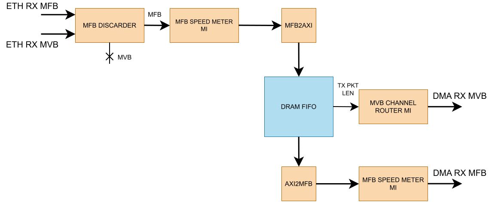
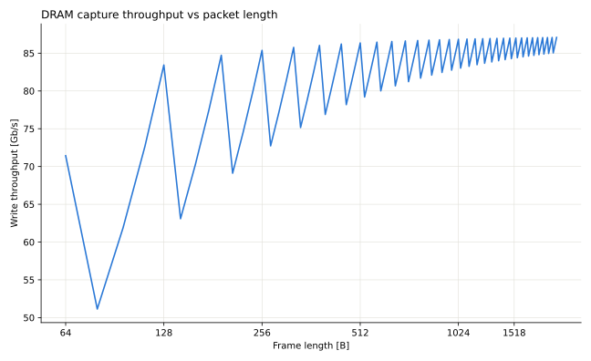

DRAM Packet Capture application
The DRAM Packet Capture application buffers incoming network packets in external DDR memory before forwarding them to the host over DMA. It decouples the capture rate from the rate at which software can drain packets.
The application contains one independent APP subcore per Ethernet stream. The Ethernet and DMA streams use the MFB buses and MVB buses.
Architecture
Each APP subcore contains one independent capture pipeline. Capture is gated by a software-controlled enable bit, so the datapath only accepts packets when the host has armed it.
RX direction (Ethernet to DMA)
Warning
This is a simplified diagram of one subcore. Check each bullet point for full explanation of each block.


MFB DISCARDER discards incoming traffic based on
capture_enable(accesable via MI). The Ethernet MVB headers are consumed here and do not travel further downstream. They are reconstructed downstream instead to avoid extra metadata entering the DRAM.MFB SPEED METER MI is used to measure throughput on the write side of each subcore. A second instance measures the read (drain) side. Both are reachable over MI at fixed offsets from the subcore base —
0x1000for the RX (write) meter and0x2000for the TX (drain) meter — and appear in the Device Tree as therx_speed_meterandtx_speed_metersubnodes of the app core, with compatible stringcesnet,ofm,speed_meter. Example usage can be seen inscripts/len_throughput_test.pyNote
That compatible string is not unique to this application: every Gen Loop Switch instance carries four meters using the same string, and GLS is enabled by default. Resolving a meter by its global index can therefore silently return the wrong one — look the meters up as subnodes of the
cesnet,dram_pkt_capture,app_corenode instead.MFB2AXI and AXI2MFB convert between the NDK’s MFB bus and the AXI-Stream interface that DRAM FIFO uses on both its write and read ports.
DRAM FIFO stores data beats in an internal FIFO, until a metaword is created. The metaword alongside with the corresponding data is captured in an external DDR4 memory over the memory interface.
MVB CHANNEL ROUTER MI is used in sync with other logic inside of the subcore to recreate the MVB bus signals based on packet length provided by DRAM FIFO
The MVB header carrying the packet length and target DMA channel is generated from
TX_PKT_LENon the first payload beat leaving the DRAM FIFO, and is held until the DMA accepts it.
STREAMING_DEBUG_PROBE_MFB probes are inserted before MFB2AXI and after
AXI2MFB, both reachable through the debug master at MI offset 0x3000.
TX direction (DMA to Ethernet)
The TX path is a straight pass-through with no DRAM buffering: a debug probe, a
METADATA_INSERTOR that attaches the Ethernet TX header, and an MFB_PIPE.
Flow control
DDR_FULL is asserted when the ring cannot accept another write. The subcore
uses it to clear capture_enable automatically, so capture stops cleanly
rather than corrupting the ring. Reading is gated separately by DDR_READ_EN.
Because capture_enable is cleared by hardware on dram_full, reading it
back is the reliable way to tell whether capture is still running rather than
assuming the last write still holds.
The register map is defined once, in scripts/dram_pkt_capture_regs.py. The
scripts and the top-level cocotb test import it from there; use it the same way
in your own tools:
import nfb
from dram_pkt_capture_regs import AppStatus
dev = nfb.open()
st = AppStatus(dev=dev, index=0) # app core 0
st.set_capture_enable(True)
while st.capture_enable: # cleared by hardware on dram_full
pass
st.set_read_enable(True) # drain the DRAM towards DMA
Run it from scripts/, or add that directory to PYTHONPATH.
The same registers can be poked from the command line with nfb-bus, using the
addresses reported by nfb-bus -l for the app_status node of the core you
want.
The app_status register block
Device tree compatible string: cesnet,dram_pkt_capture,app_status.
Offset |
Bit |
Access |
Description |
|---|---|---|---|
|
0 |
RO |
|
|
0 |
RW |
|
|
0 |
RW |
|
A typical capture cycle is: set capture_enable, wait for dram_full (or
stop manually), clear capture_enable, then set read_enable to drain the
buffer to the host.
You can test flow control with the following script: scripts/throughput_test.py
Edge cases
Capture and read enabled at the same time. This is allowed, but the DRAM FIFO gives writes priority on the shared memory port: a read is issued only in cycles with no pending write. Under heavy incoming traffic the drain slows down or stops until the traffic eases or
capture_enableis cleared.Packets already on chip when
capture_enableis cleared. Clearing it only makes the discarder drop new packets. Packets that already passed the discarder are still written to DRAM and can be read out. Their lengths are stored in a shared metaword that is written only when it is full or afterFLUSH_TIMEOUT(1024) cycles without a new packet, so the last few packets reach DRAM, and become readable, with that delay.capture_enabledoes not re-arm itself. Afterdram_fullclears it, it stays0even once reading has freed space. Software must set it again. A write of1whiledram_fullis still asserted is overridden in the next cycle, so read the register back to confirm capture is running.Starting a new capture before the buffer is drained. The ring pointers are cleared only by reset. Neither
capture_enablenorread_enabletouches them. The ring is a FIFO, so the remaining packets from the previous capture are read out first, followed by the new ones. To start with an empty buffer, drain it completely (or reset the design) before enabling capture.
Memory interface
Each subcore uses MEM_PORTS_USED Avalon-MM ports (default 2) of
MEM_DATA_WIDTH bits each (default 256). The two ports are ganged into a
single INT_DATA_WIDTH = 512-bit interface, with reads and writes issued to
both ports in lockstep, an accepted register pairs up the two ardy
responses so a transfer only advances once both ports have taken it.
On the n6010 with MEM_PORTS = 4, this gives two
subcores with two DDR4 channels each.
Memory target selection
application_core.vhd selects where the AVMM traffic goes:
type mem_target_t is (MEM_TGT_BRAM, MEM_TGT_EXT_DDR);
constant MEM_TARGET : mem_target_t := MEM_TGT_EXT_DDR;
MEM_TGT_BRAMInstantiates
AVMM_BRAMas an on-chip memory model. Required for simulation — the card’s DDR4 controllers are not bound in simulation.MEM_TGT_EXT_DDRConnects to the card’s external memory controllers. Required for a bitstream.
Warning
This constant is edited by hand and must be switched when moving between
simulation and synthesis. Building a bitstream with MEM_TGT_BRAM gives a
design with no external memory. Running the top-level simulation with
MEM_TGT_EXT_DDR leaves the AVMM interface connected to unbound components
and the simulation will not work.
The ring depth follows MEM_TARGET automatically, so switching target is the
only edit needed:
constant BRAM_ADDR_WIDTH : natural := 13;
constant RING_ADDR_WIDTH : natural :=
tsel(MEM_TARGET = MEM_TGT_BRAM, BRAM_ADDR_WIDTH, MEM_ADDR_WIDTH);
RING_ADDR_WIDTH is passed to the subcore and sets DRAM_FIFO’s
FIFO_ITEMS to 2**RING_ADDR_WIDTH. It is deliberately separate from
MEM_ADDR_WIDTH, which stays at the card’s value (27 on the n6010) as the
width of the AVMM address bus. In the BRAM configuration BRAM_ADDR_WIDTH
alone drives the AVMM_BRAM depth, the resize() at its address port and
the ring depth, so resizing the simulation memory is a one-line change.
Note
The ring must never be deeper than the memory behind it. The AVMM address is
truncated with resize() at the BRAM port, so an oversized ring aliases
onto itself and silently overwrites unread data. The symptom is complete loss
of packet framing, which looks like an RTL bug but is not. The derivation
above prevents this as long as BRAM_ADDR_WIDTH matches the memory model.
The application MI offsets
The application MI space is split between the APP subcores. Each subcore gets a sub-window whose width is derived from the number of Ethernet streams rounded up to a power of two. Within it, the layout is fixed:
Offset |
Block |
|---|---|
|
|
|
|
|
|
|
|
|
|
The full map is described by the DevTree and can be listed from the card with
nfb-bus -l, application nodes appear under
/firmware/mi_pci0_bar0/application/*.
Build
Only the n6010 build target is provided:
cd apps/dram_pkt_capture/build/n6010
make 100g2
The entire application can be simulated. See Top-level simulation.
Throughput measurement
Two scripts read the speed meters over MI on a running card:
Note
These scripts need the nfb and ofm Python packages.
scripts/throughput_test.pySamples RX and TX throughput continuously and prints a live figure, with interactive control of the capture and read enable bits.
scripts/len_throughput_test.pySweeps the transmitted packet length and records throughput per length, producing a CSV and a plot.
Note
When using this script the -s, –frame-size argument MAX cannot exceed 16316 B, otherwise GLS stops creating traffic.
The graph below was measured under these conditions:
Traffic source: the Gen Loop Switch generator of the measured core. Frames go out through the Ethernet TX MAC and come back through PMA local loopback, so the offered load is the 100 Gb/s line rate for the given frame length.
One core at a time: only core 0 (one 100G port) was measured. The other core received no traffic.
Write only:
read_enablewas0while measuring, so the memory port served only writes. Between lengths the DRAM was drained withread_enable = 1so every length started with an empty buffer.Measured value: the RX (capture side) speed meter, averaged over 4 windows of 84 ms. Windows without traffic, e.g. the one in which
dram_fullstopped capture, are left out.Frame length on the X axis includes the 4 B FCS. The sweep runs from 64 B to 2048 B. The last labelled tick is 1518 B.


Capture (DRAM write) throughput against frame length on the
n6010, measured with len_throughput_test.py.
Drain (read) throughput is not shown.
Two properties of the design shape the curve:
Single-word DDR accesses. Every DDR transaction carries one 512-bit word
(two 256-bit memory ports side by side). AVMM_BURSTCOUNT is fixed to 1.
The memory controller therefore receives a separate command for every word and
cannot use longer bursts. This is the most likely reason the write side levels
off at about 87 Gb/s for large frames, below the 102 Gb/s the application clock
allows (200 MHz × 512 b).
Word-aligned packets. Every packet starts at the beginning of a new 64 B
word, so a packet of L bytes occupies ceil(L/64) words in DRAM and on the
internal bus. When L is just above a multiple of 64 B, the last word is
mostly empty and throughput drops. For example, an 80 B frame takes two words
(128 B), so only 62.5 % of the bandwidth carries payload. 1040 B and 1488 B
frames waste 48 B of their last word as well. These are the dips in the graph.
Drain (read) throughput is not part of the graph and has its own limit.
Reads are single words as well, and each memory port allows at most 16 reads
in flight: MAX_OUTSTANDING in app_subcore.vhd and the fixed depth of
the MI_ASYNC clock-domain crossing. A read holds its slot for the whole
round trip into the memory clock domain, through the memory controller and
back, so the drain rate is at most 16 / round-trip latency words per
clock. Once the round trip exceeds 16 cycles, the drain is slower than
capture.
Supported cards
Content: